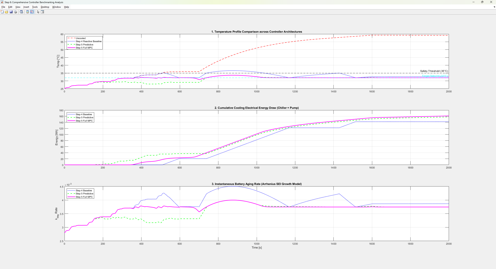

Weingarten, Germany
Hi, I'm Atharva Nikam
Mechatronics Engineer · M.Sc.
|
Simulating EV powertrains and battery thermal systems in MATLAB/Simulink, validating hardware with oscilloscopes and multimeters, and turning messy legacy code into documented, trustworthy systems.
01 — About
Who I am
I'm a Mechatronics Master's student with hands-on experience in EV powertrain and battery system simulation, prototype development, laboratory testing, and engineering documentation — built across industrial roles and university projects.
I combine MATLAB/Simulink-based modeling with functional validation using oscilloscopes and multimeters, backed by a CAD/FEM mechanical design background from prior industry roles. That mix — simulation, hardware, and documentation — is what I bring to engineering roles.
02 — Experience
Where I've worked
Mechanical Design Engineer
Chakra Technologies, Navi Mumbai, IndiaFour months living in the gap between "looks right on screen" and "survives the shop floor." I'd model an assembly in SolidWorks, run it through ANSYS Workbench before anyone touched material, and only then release drawings, BOMs, and tolerances a machinist could pick up cold. The habit that stuck: catching a weak point in simulation is a five-minute fix; catching it after a prototype is built is a five-week one.
Fewer redesign cycles, cleaner handoff to manufacturing.Graduate Trainee Engineer
LCT Pvt. Ltd., Navi Mumbai, IndiaFirst real exposure to equipment where a design oversight isn't cosmetic — these were testing rigs rated 2 to 10 tons. Five design changes came out of standing next to the machines while they ran and asking the assembly crew what actually slowed them down, not just reading the spec sheet. Designing with assembly sequence in mind, not just final geometry, is what shaved roughly two weeks off workshop prep.
Learned to design for the person assembling it, not just the drawing.Junior Faculty Intern
DCIT, IndiaTeaching CAD turned out to be the fastest way to actually understand it — you can't hand-wave GD&T when a room of students is about to ask why a callout is toleranced that way. Reviewed 40+ student models and drawings for exactly that kind of gap between "drew it right" and "understood it."
92% first-attempt certification pass rate in that cohort — the metric I still measure explanations against.Education
M.Sc. Mechatronics
Ravensburg-Weingarten University of Applied Sciences, Germany
Advanced Hybrids · Electric Drives · Power ElectronicsB.E. Mechanical Engineering
Bharati Vidyapeeth College of Engineering, India
Machine Design · Product Development · ManufacturingDiploma, Mechanical Engineering
Bharati Vidyapeeth College of Engineering, India
Elements of Machine Design · Automobile Engineering03 — Projects
Featured work

Predictive Electric Vehicle Cooling
Simscape Fluids battery thermal plant with reactive, predictive-lookahead, and constrained nonlinear MPC controllers — built to replace slow-reacting thermostatic cooling with forecast-aware control.
- Coupled a control-oriented MATLAB plant (longitudinal dynamics, motor/inverter efficiency, coulomb-counting battery model) with a high-fidelity Simscape Fluids cooling loop.
- Designed a receding-horizon
fminconMPC controller enforcing a hard 35°C safety constraint while minimizing thermal error, energy use, and actuator slew rate. - Built a Kalman filter for SOC estimation and an Arrhenius SEI-growth model translating temperature exposure into battery-aging and range impact.
Low-Cost Citizen Heat & Position Mapping System
Academic research project with Prof. Dr. Markus Pfeil (Embedded Systems, RWU) — a low-cost, battery-powered handheld device for crowd-sourced, street-level urban heat mapping, piloted in Weingarten.
- Evaluated LoRaWAN vs. GSM vs. hybrid store-and-forward connectivity and multi-GNSS (NEO-M8N/M9N class) positioning for the best accuracy/power/cost balance.
- Scoped firmware state machine, sensor payload (air temp + BME280 humidity + MLX90614 IR surface temp), and an IDW/Kriging spatial-interpolation backend, benchmarked against NOAA/CAPA Heat Watch methodology.
- Drafted 6-month timeline and budget for a 30–50 unit pilot fleet at €50–100/unit.
EV Powertrain, Thermal & SOC Estimation
MATLAB simulation of an EV powertrain — battery electrical/thermal behaviour, energy management, and Kalman-filter SOC estimation validated against drive-cycle data.
- SOC estimation accuracy within 1.29% against standard drive-cycle data.
- Regenerative braking logic and thermal modeling evaluated against power-electronics performance.
AI-Assisted Legacy Code Modernization
Diagnosed a silent Python-2 floor-division bug in a 6,000-vehicle fleet-monitoring script, then directed an AI coding agent (IBM Bob) through scoped, audited fixes.
- Caught an unauthorized threshold change proposed by the agent and rejected it before merge.
- Wrote a data-driven breakdown-risk model using km-since-service, avg. daily km, and load factor instead of raw mileage.
Multi-Purpose Agricultural Vehicle
Structural chassis architecture and mechanical transmission layout for a multi-functional utility vehicle prototype.
- Reduced overall vehicle weight by ~12% through structural design improvements.
- Field-validated prototype performance within 5% of design calculations.
BAJA Collegiate Motorsports
Drivetrain mounting components and mechanical assemblies for an off-road BAJA SAE competition vehicle.
- Integrated mechanical subsystems, improving overall vehicle assembly efficiency.
- Assembly documentation enabled prototype integration several days ahead of schedule.
04 — Skills
Toolbox
Simulation & Programming
Automotive & Power Systems
Engineering Tools
Languages
05 — Contact
Let's build something
Open to internships and engineering roles spanning simulation, hardware validation, and documentation. Based in Weingarten, Germany — happy to talk EV systems, MATLAB/Simulink, or anything mechatronics.